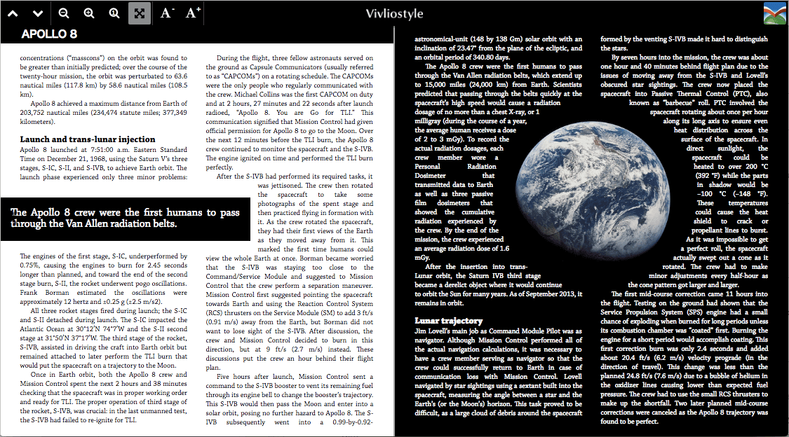
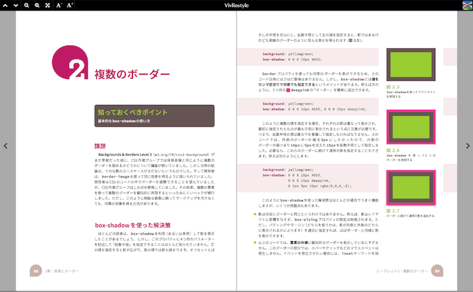
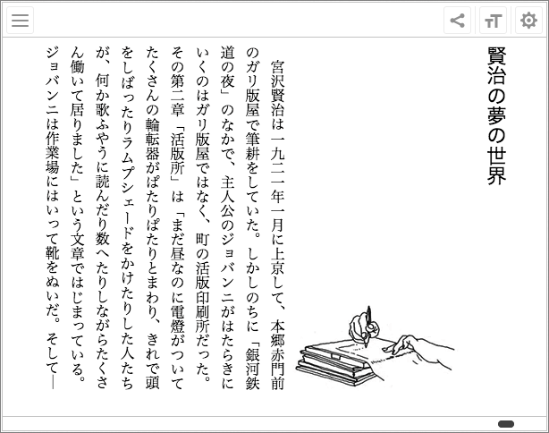
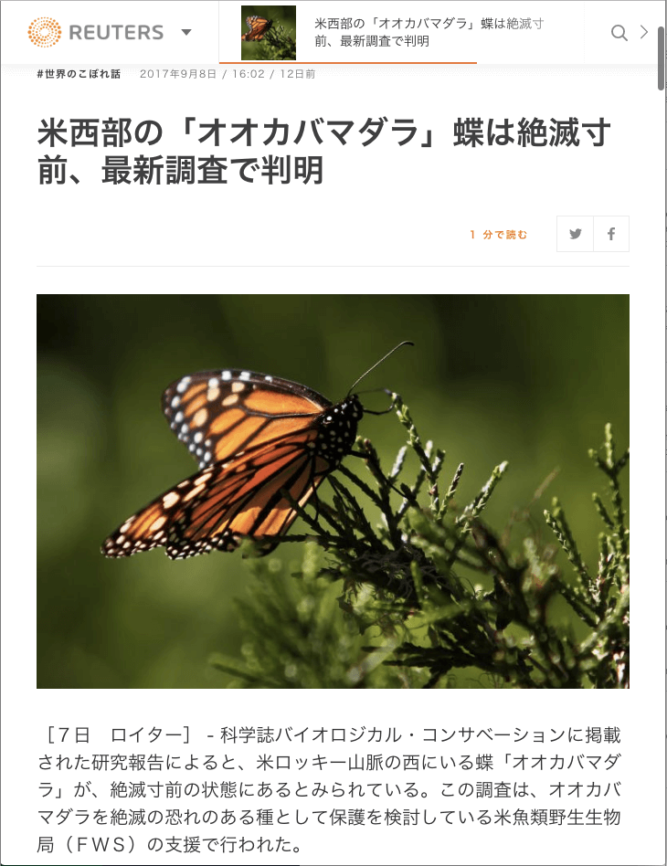
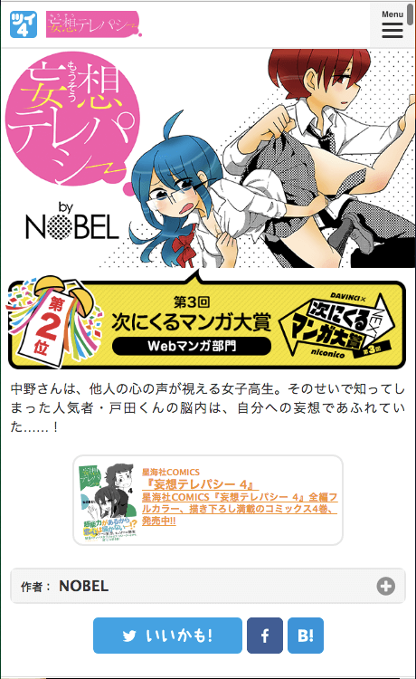
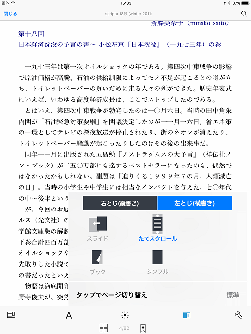
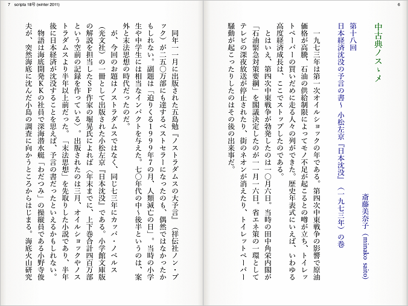
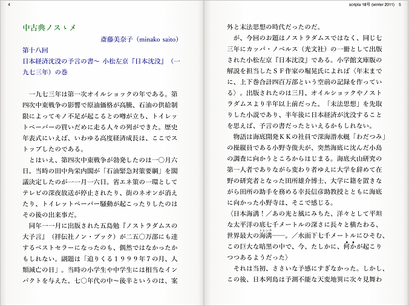

それで、
Webと本の未来どうなる？
もっと読みやすく美しいレイアウトをWebでも本でも
スクロールとページ方式のそれぞれの良さ、使いやすさがある
CSS仕様の進化により、さらに豊かなページレイアウト表現が実現（期待）

段組み：
CSS Multi-column Layout
任意の形の回り込み：
CSS Shapes
ページのレイアウト
CSS Paged Media
CSS Generated Content
CSS Page Templates
CSS Page Floats
Webでも本でもリンクを張って参照したり気になる箇所をマークしたり注釈をつけたりできること
Web/EPUB Annotationの標準
Hypothes.is
というオープンな実装も
「Web出版物」を一意に表す識別子（URIなど）とその中身の特定箇所を指す識別子
Webと本をもっとアクセシブルで便利に
画面を音声で読み上げるスクリーンリーダーを
使う人のイラスト（
「いらすとや」より
）
コンテンツが「Web出版物」の標準に従うことで、コンテンツ内のナビゲーションや、音声読み上げでの利用がより便利に
コンテンツにセマンティックなメタデータ
DPUB-ARIA (Digital Publishing WAI-ARIA)
「Web出版物」を先取りしてる事例
Webブラウザでのページネーション


Vivliostyle
次世代CSSページレイアウト仕様をJavaScriptで実装し、ブラウザ上のレイアウト機能を拡張
BiB/i
「BiB/i（ビビ）は、電子書籍とウェブをひとつに結び、本を届けるための EPUB リーダです」
複数のWebページをスクロールで連続して読む


ニュースサイト（例：
ロイター
）
コミックス（例：
ツイ4
）
これらのWebサイトでは、下にスクロールしていくと次の記事／HTMLページに移り（ブラウザでのURL表示も変化）、連続して読み進めることができる。
スクロールとページ、横書きと縦書きの切り替えができるEPUBリーダー
（紀伊國屋書店Kinoppyアプリ）
  
パネル・ディスカッション： Webと本の未来はどうなる？
http://events.html5j.org/conference/2017/9/session/#e2
村上 真雄
Vivliostyle Inc.
(株式会社ビブリオスタイル)
松島 智
String & Letters
田嶋 淳
（株）三陽社
安藤 一博
国立国会図書館
伊藤 俊輔
株式会社キーポート・
ソリューションズ
木枝 祐介
清閑堂
下川 和男
イースト株式会社
ハッシュタグ
#html5jpub